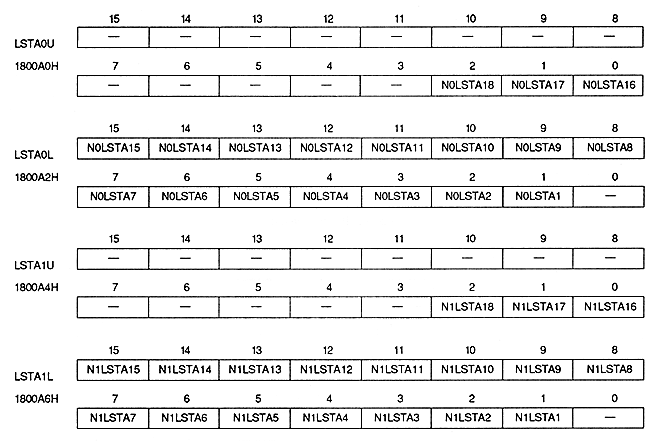

Line scroll table address bit : Line scroll table address bit
| N0LSTA18 to N0LSTA16 | 1800A0H | Bits 2 to 0 | NBG0 For (upper bit) |
| N0LSTA15 to N0LSTA1 | 1800A2H | bits 15 to 1 | For NBG0 (lower bits) |
| N1LSTA18 to N1LSTA16 | 1800A4H | bits 2 to 0 | NBG1 (upper bit) |
| N1LSTA15 to N1LSTA1 | 1800A6H | bits 15 to 1 | NBG1 (lower bits) |
The actual start VRAM address is calculated by the following formula. If the VRAM capacity is 4M bits, the most significant bit of the address is ignored.
(Line scroll table start address) = (Line scroll table address register value 18 bits) × 4H